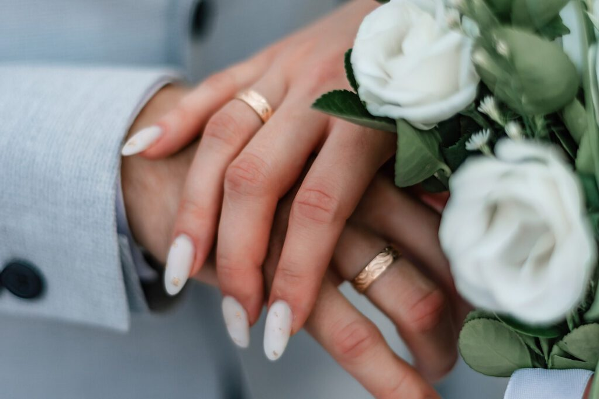

Wenn du von einer Hochzeitsfeier träumst, die sowohl romantisch als auch einzigartig ist, dann solltest du unbedingt die Nord-West-Schweiz in deine Hochzeitsplanung einbeziehen.

Heiraten am See – Romantik pur
Stell dir vor, du sagst „Ja" mit einem atemberaubenden Blick auf den idyllischen Hallwilersee oder den mächtigen Zürichsee. Hier findest du zahlreiche elegante Hotels und Restaurants mit herrlichem Seeblick.
Hochzeit auf dem Berg – Ein unvergessliches Erlebnis
Die Region rund um den Uetliberg oder das Baselbieter und Fricktaler Juragebirge bietet dir eine atemberaubende Kulisse. Stell dir eine Zeremonie auf einer Bergwiese vor, umgeben von majestätischen Gipfeln.
In einer Villa heiraten – Eleganz und Charme
Besonders charmant sind die historischen Villen in der Umgebung von Basel, die sowohl historischen Charme als auch modernen Komfort bieten.
Im Schloss heiraten – Märchenhaft und königlich
Im Kanton Aargau findest du das Schloss Lenzburg, das mit seiner historischen Atmosphäre einen königlichen Rahmen für eure Hochzeit bietet. Im Kanton Basel-Land beeindruckt das Schloss Bottmingen mit seinem malerischen Teich.
Weitere Traumlocations
Die Region bietet eine Vielzahl an charmanten Weingütern, historischen Bauernhöfen und modernen Event-Locations, die alle ihren eigenen einzigartigen Charme haben.